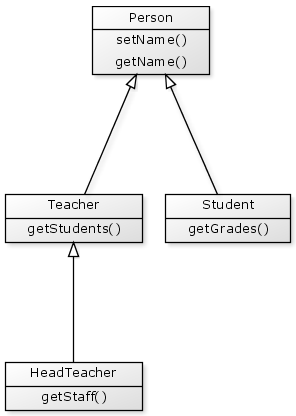
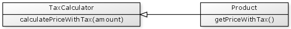
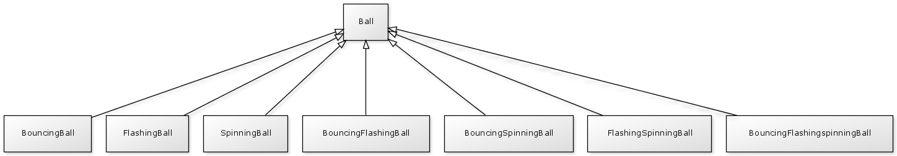

Inheritance can extend as deep as required. For example if we needed to introduce a new HeadTeacher into the system, then the HeadTeacher could extend the Teacher component.

The CFML code for our head teacher would look like:
{% highlight cfm %}Each HeadTeacher object would have its own getStaff() function, but would also inherit the getStudents() function from Teacher and the getName() and setName() functions from Person.
Inheritance is more than just code sharing
Inheritance provides a mechanism for sharing code across components, but it also has a special meaning in object oriented design and should typically not be used as a widespread code sharing technique.
Inheritance implies specialisation
This means that when you are travelling down the inheritance hierarchy, each component further down should be a more "specialised" version of the one before it:
- Teacher is a more specialised version of Person
- Student is a more specialised version of Person
- HeadTeacher is a more specialised version of Teacher
Conversely, as you travel up the inheritance hierarchy, each component further up should be a more "generalised" version of the one before it:
- Teacher is a more generalised version of HeadTeacher
- Person is a more generalised version of Teacher
- Person is a more generalised version of Student
Inheritance is an "IS A" relationship
There is a simple way to test if you have proper inheritance; you should always be able to say that your sub-component IS A super-component.
Looking at our example we can say:
- Teacher IS A Person
- Student IS A Person
- HeadTeacher IS A Teacher
Example of bad inheritance
Suppose you have an object that calculates prices including tax for you.

Then elsewhere in your application you have a Product object that needs to use this calculation function.
It would be incorrect usage of inheritance to have your Product inherit from the TaxCalculator.

Applying our IS A test to these components:
"Product IS A TaxCalculator"
Not really. Our product needs to use a tax calculator, but is it not a calculator itself.
In cases such as these there are other techniques for sharing code across components such as composition which we will discuss shortly.
Guidelines for good inheritance implementations
Keep lightweight parent-components
Components higher up in the inheritance hierarchy should be kept as "lightweight" as possible. This keeps their meaning very specific and single purposed.
If a parent component has many functions then a sub-component may inherit functions it doesn't need. If this happens it could be a sign that:
- the parent component is doing too much, or
- the sub-component is not really a specialisation of the parent and should not inherit from it.
Keep a strong relationship with parent-components
Your sub-components should have a strong relationship with the parent component. This is related to the previous guideline in that all of the parent functions should be directly relevant and useful to the sub-component.
Avoid sub-component combinations
Suppose you have a component Ball, and you create three sub-components BouncingBall, FlashingBall and SpinningBall. You then find that you need balls that are combinations of the other three sub-components; a BouncingFlashingBall, a BouncingSpinningBall, a FlashingSpinningBall and a BouncingFlashingSpinningBall.

This leads to a very messy implementation particularly as each new Ball sub-component is created.
In cases such as these, where you appear to need multiple combinations of sub-components then inheritance is not the best choice. It is better to use an alternative technique such a Decorator design pattern rather than inheritance.